Manual do OctoSearch
Tudo o que o OctoSearch faz, passo a passo e com telas reais: desde abrir a primeira pasta até combinar buscas com E/OU, salvar filtros e acompanhar logs em tempo real.
01Introdução
O OctoSearch é um visualizador de arquivos de log para Windows. Ele lê arquivos .log e .txt de qualquer aplicação (APIs, serviços, servidores, jobs), reconhece data, hora e nível de cada registro e permite encontrar o que importa em segundos.
- Abra pastas inteiras, inclusive com subpastas e em caminhos de rede.
- Veja vários arquivos juntos, mesclados em ordem cronológica.
- Busque incluindo e excluindo termos e combine-os com E e OU.
- Salve filtros com nome e grupo, e destaque linhas com marcadores coloridos.
- Acompanhe em tempo real os arquivos que estão sendo escritos.
Seus logs não saem do seu computador. O OctoSearch funciona 100% offline e lê os arquivos diretamente do disco.
02Instalação e atualização
Há duas versões, ambas gratuitas, na página de download.
| Versão | Quando usar | Atualização automática |
|---|---|---|
Instalador (OctoSearch-Setup.exe) | Uso diário no seu computador. Cria atalhos no menu Iniciar e na área de trabalho. | Sim |
Portátil (OctoSearch.exe) | Pen drive, servidores ou máquinas onde você não pode instalar programas. | Não: baixe de novo pelo site |
Instalando
- Baixe o instalador na página de download e execute o arquivo.
- Se o Windows mostrar “O Windows protegeu o computador”, clique em Mais informações e depois em Executar assim mesmo. O aviso aparece porque o instalador ainda não tem assinatura digital.
- Escolha a pasta de instalação (ou mantenha a sugerida) e conclua. O OctoSearch abre ao terminar.
Atualizações
Na versão instalada, o OctoSearch procura versões novas sempre que é aberto e, se ficar aberto, a cada 6 horas. Quando encontra, baixa em segundo plano e mostra o aviso “Atualização disponível”:
- Reiniciar agora: fecha, instala e abre a nova versão.
- Depois: a atualização é instalada automaticamente quando você fechar o aplicativo.
03Visão geral da tela
Esta é a tela principal com uma pasta aberta e três arquivos selecionados. Os números indicam cada área, explicadas nas seções seguintes.
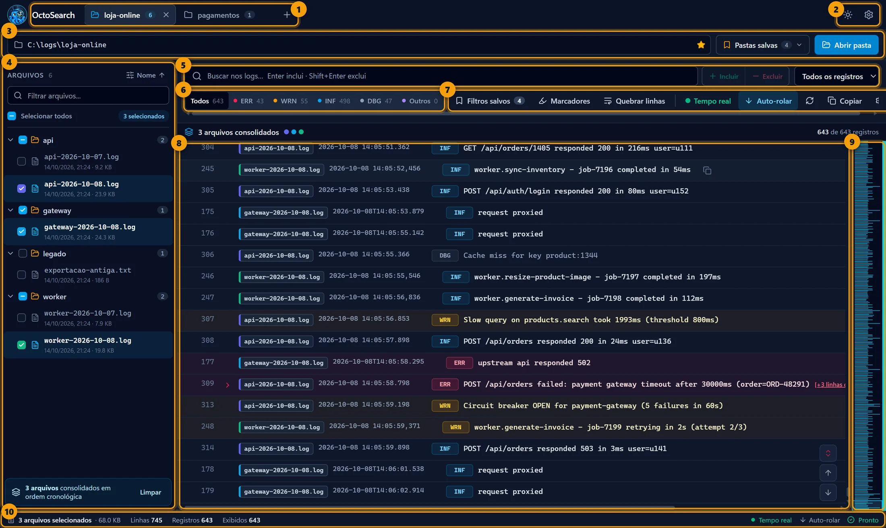
- 1Abas: cada pasta aberta fica em uma aba. O
+abre outra pasta. Ver abas - 2Tema e configurações: alterna claro/escuro e abre as configurações. Ver configurações
- 3Pasta atual: caminho da pasta, estrela de favorito, Pastas salvas e Abrir pasta. Ver abrir logs
- 4Lista de arquivos: os logs encontrados na pasta e nas subpastas. Ver lista de arquivos
- 5Busca e limite: incluir/excluir termos e limitar a quantidade de registros. Ver busca
- 6Níveis: filtra por ERR, WRN, INF, DBG ou Outros, com a contagem de cada um. Ver níveis
- 7Ferramentas: filtros salvos, marcadores, quebra de linha, tempo real, recarregar e copiar. Ver ferramentas
- 8Visualizador: os registros do log, com data, nível, mensagem e stack trace. Ver registros
- 9Prévia do log: miniatura de todo o conteúdo; clique para pular para aquele ponto.
- 10Barra de status: arquivos selecionados, tamanho, linhas e registros exibidos. Ver barra de status
04Abrindo logs
Ao abrir o OctoSearch pela primeira vez, a tela fica vazia esperando uma pasta.
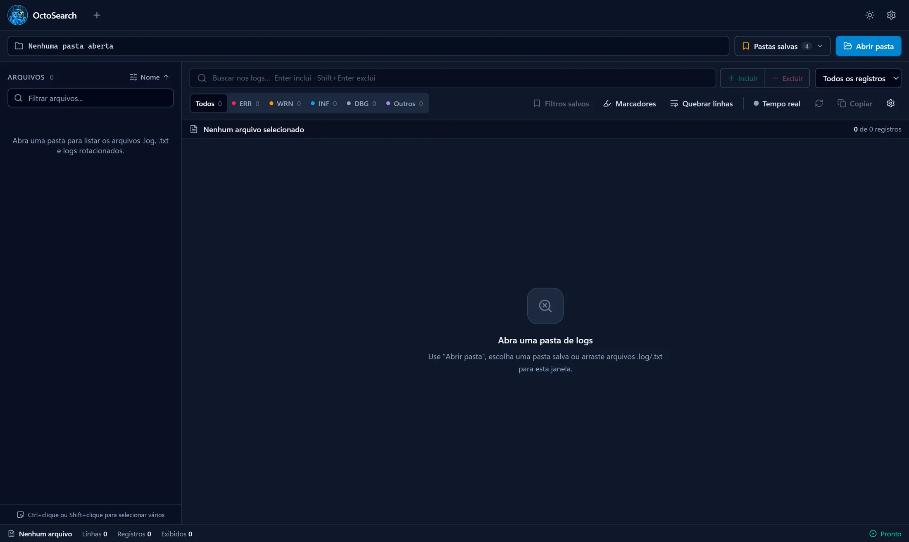
Existem três formas de abrir logs:
- Abrir pasta (botão azul no canto superior direito): escolha uma pasta no Windows. O OctoSearch procura arquivos de log nela e em todas as subpastas.
- Pastas salvas: reabra com um clique uma pasta que você já usou. Veja a próxima seção.
- Arrastar e soltar: arraste arquivos
.logou.txtdo Explorer para a janela. Eles abrem em uma nova aba.
Quais arquivos aparecem? Arquivos .log, .txt e logs rotacionados, como app.log.1 ou app.txt.3. Outros tipos de arquivo são ignorados.
Cada pasta aberta é guardada no histórico de Pastas salvas. Ao fechar e abrir o OctoSearch de novo, as abas que estavam abertas são restauradas, com os mesmos arquivos selecionados.
05Pastas salvas e favoritas
O botão Pastas salvas mostra um atalho com as pastas favoritas (estrela) e as recentes (relógio).
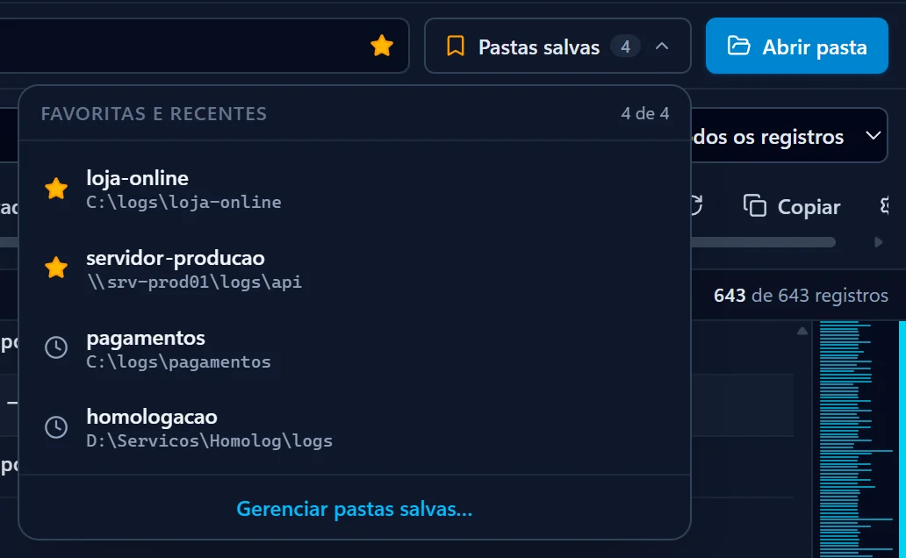
Clique em Gerenciar pastas salvas… para ver a lista completa:
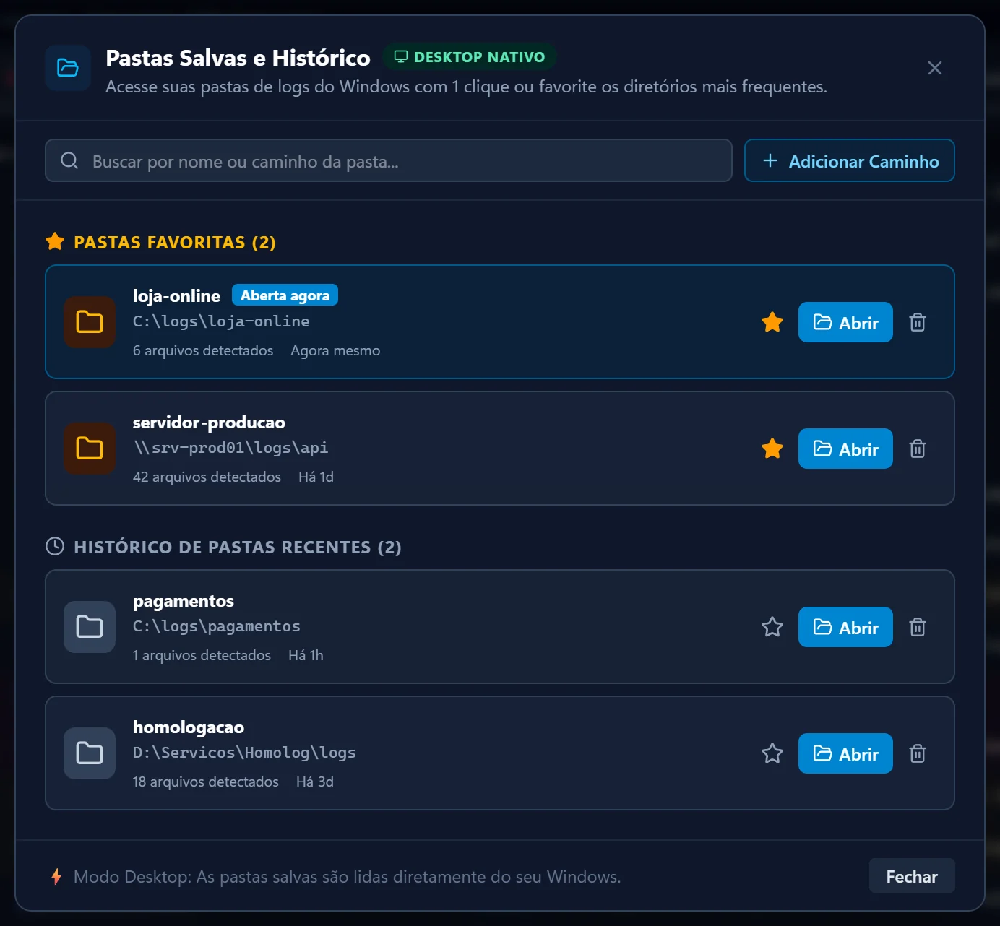
- Abrir: carrega os logs da pasta. A pasta já aberta aparece marcada como Aberta agora.
- Estrela: favorita ou desfavorita. As favoritas ficam no topo da lista e do atalho.
- Lixeira: remove a pasta do histórico. Os arquivos não são apagados do disco.
- Buscar: filtra a lista por nome ou caminho.
- Adicionar Caminho: cadastra uma pasta digitando o caminho, como
D:\Servicos\Logsou um caminho de rede\\servidor\logs.
Também dá para favoritar a pasta atual pela estrela que fica à direita do caminho, na barra da pasta.
06Abas
Cada pasta aberta vira uma aba, com seus próprios arquivos selecionados, buscas e filtros. O número na aba é a quantidade de arquivos de log da pasta.
- Trocar de pasta: clique na aba.
- Abrir outra pasta: clique no
+ao lado das abas. - Fechar: clique no
×da aba. - Dar um apelido: dê um duplo clique na aba, digite o nome (ex.: “API Produção”) e pressione Enter. Esc cancela.
Clicando com o botão direito na aba, você tem mais opções:
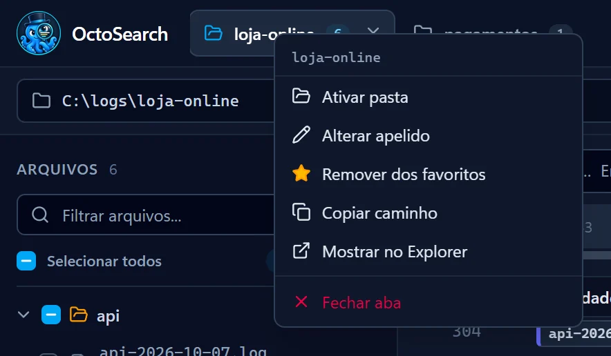
07Lista de arquivos
À esquerda ficam os arquivos de log da pasta, organizados em árvore pelas subpastas. Os arquivos marcados são os exibidos no visualizador.
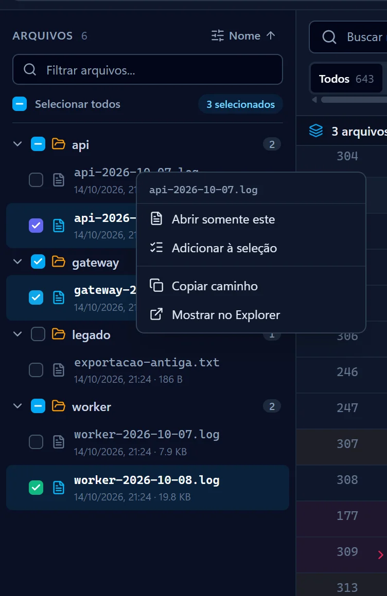
Selecionando arquivos
| Ação | Resultado |
|---|---|
| Clique no arquivo | Mostra somente esse arquivo. |
| Clique na caixa de seleção | Adiciona ou remove o arquivo da seleção. |
| Ctrl + clique | Adiciona ou remove o arquivo da seleção. |
| Shift + clique | Seleciona todos os arquivos entre o último clicado e este. |
| Caixa de seleção da pasta | Marca ou desmarca todos os arquivos daquela subpasta. |
| Selecionar todos ou Ctrl + A na lista | Seleciona todos os arquivos visíveis. |
Ao abrir uma pasta, o OctoSearch já seleciona o log mais recente de cada subpasta.
Outras opções
- Filtrar arquivos…: mostra só os arquivos cujo nome ou caminho contém o texto digitado.
- Ordenação (botão “Nome ↑”): abre as configurações para ordenar por nome, data de criação ou última modificação. Ver configurações.
- Botão direito em um arquivo: Abrir somente este, Adicionar/Remover da seleção, Copiar caminho e Mostrar no Explorer.
- Botão direito em uma subpasta: Ver somente esta pasta (seleciona só os arquivos dela), Expandir ou recolher, Copiar caminho e Mostrar no Explorer.
08Vários arquivos juntos (visão mesclada)
Quando você seleciona mais de um arquivo, os registros de todos são mesclados em ordem cronológica. É ideal para seguir uma requisição que passa por vários serviços.
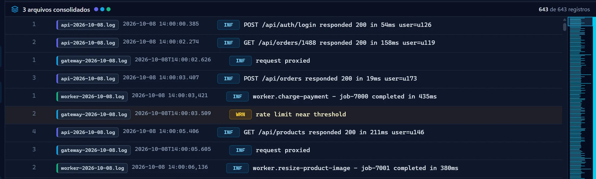
- O título mostra “3 arquivos consolidados” e as bolinhas com a cor de cada arquivo.
- A etiqueta à esquerda de cada registro diz de qual arquivo ele veio.
- O número da linha é a linha dentro do arquivo de origem.
- No rodapé da lista de arquivos, Limpar desfaz a seleção.
Arquivos muito grandes: o conteúdo de cada arquivo selecionado é carregado na memória. Abrir uma pasta com muitos arquivos é leve; selecionar dezenas de arquivos grandes ao mesmo tempo pode deixar o app mais lento.
09Lendo os registros
Cada linha do visualizador é um registro: o número da linha, a etiqueta do arquivo (na visão mesclada), a data e hora, o nível e a mensagem.
| Nível | Significado | Também reconhece |
|---|---|---|
ERR | Erros e falhas (linha com fundo vermelho) | ERROR, FATAL, CRITICAL, EXCEPTION… |
WRN | Avisos (fundo âmbar) | WARN, WARNING |
INF | Informações | INFO, INFORMATION, NOTICE |
DBG | Depuração e rastreamento | DEBUG, TRACE, VERBOSE |
| Outros | Linhas sem nível reconhecido | — |
Exceções e stack trace
Registros com stack trace mostram uma seta › e o link [+N linhas de exceção]. Clique para expandir o contexto da exceção; clique de novo para recolher.
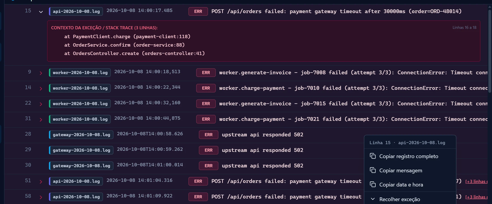
- Botão direito no registro: Copiar registro completo (com a stack trace), Copiar mensagem, Copiar data e hora e Expandir/Recolher exceção.
- Ícone de copiar: ao passar o mouse sobre um registro, aparece um botão que copia o registro completo.
- Se o termo buscado estiver dentro da stack trace, ela já abre expandida.
Navegação rápida
No canto inferior direito do visualizador ficam três botões: expandir/recolher todas as exceções, ir para o início e ir para o final. A prévia do log, a faixa estreita à direita, mostra o arquivo inteiro em miniatura, com erros e avisos coloridos: clique em qualquer ponto para pular até lá.
10Busca: incluir e excluir
Digite um texto na caixa Buscar nos logs… (ou pressione Ctrl + F) e escolha o que fazer com ele:
| Tecla ou botão | Efeito |
|---|---|
| Enter ou + Incluir | Mostra somente os registros que contêm o texto. |
| Shift + Enter ou − Excluir | Esconde os registros que contêm o texto. |
Cada termo vira uma etiqueta (“chip”) abaixo da barra de ferramentas. No exemplo, aparecem só os registros com timeout e sem ORD-48291, e as ocorrências ficam destacadas em amarelo:
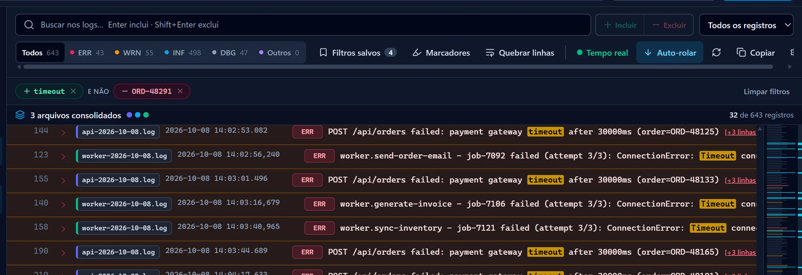
- Trocar entre incluir e excluir: clique no texto do chip.
- Remover um termo: clique no
×do chip. - Remover tudo: clique em Limpar filtros, à direita dos chips.
- Esc limpa o texto que ainda está na caixa de busca.
A busca não diferencia maiúsculas de minúsculas e procura na mensagem, na data, no nível, no nome do arquivo e na stack trace.
11Combinando termos com E e OU
Entre dois termos incluídos aparece um conector. Clique nele para alternar entre OU e E:
- OU: basta o registro ter um dos lados. É o padrão.
- E: o registro precisa ter os dois termos.
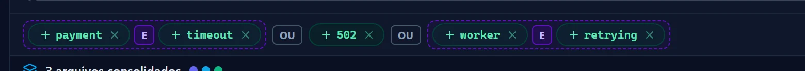
O E sempre agrupa antes do OU, e os termos ligados por E aparecem juntos dentro de uma moldura roxa tracejada. Assim você vê exatamente como a busca é lida:
| Você monta | O OctoSearch entende | Mostra registros com… |
|---|---|---|
| payment E timeout | (payment e timeout) | os dois termos |
| payment OU timeout | payment ou timeout | qualquer um dos dois |
| payment E timeout OU 502 | (payment e timeout) ou 502 | os dois primeiros juntos, ou “502” |
| payment OU timeout E 502 | payment ou (timeout e 502) | “payment”, ou “timeout” junto com “502” |
Os termos excluídos continuam valendo para tudo: “e não …” esconde o registro em qualquer um dos casos.
Dica: para buscar “A e (B ou C)”, monte A E B OU A E C, ou seja, (A e B) ou (A e C).
12Nível e limite de registros
Filtrar por nível
Os botões Todos · ERR · WRN · INF · DBG · Outros mostram somente os registros daquele nível. O número ao lado é quantos registros de cada nível existem nos arquivos selecionados.
Limitar a quantidade
O seletor Todos os registros limita a quantidade exibida a 50, 100, 500, 1.000, 5.000 ou um número Personalizado… (até 500.000). Ao escolher um limite, aparecem as opções:
- Últimos: os registros mais recentes (fim do log), como o
tail. - Primeiros: os registros do início do log.
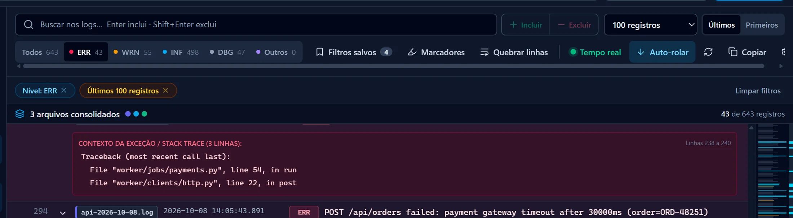
Um registro conta como um só, mesmo que tenha várias linhas de stack trace. Nível, limite e busca valem juntos e ficam guardados em cada aba.
13Filtros salvos
Guarde combinações de busca que você usa sempre, como “erros de pagamento” ou “retentativas do worker”, e aplique de novo com um clique.
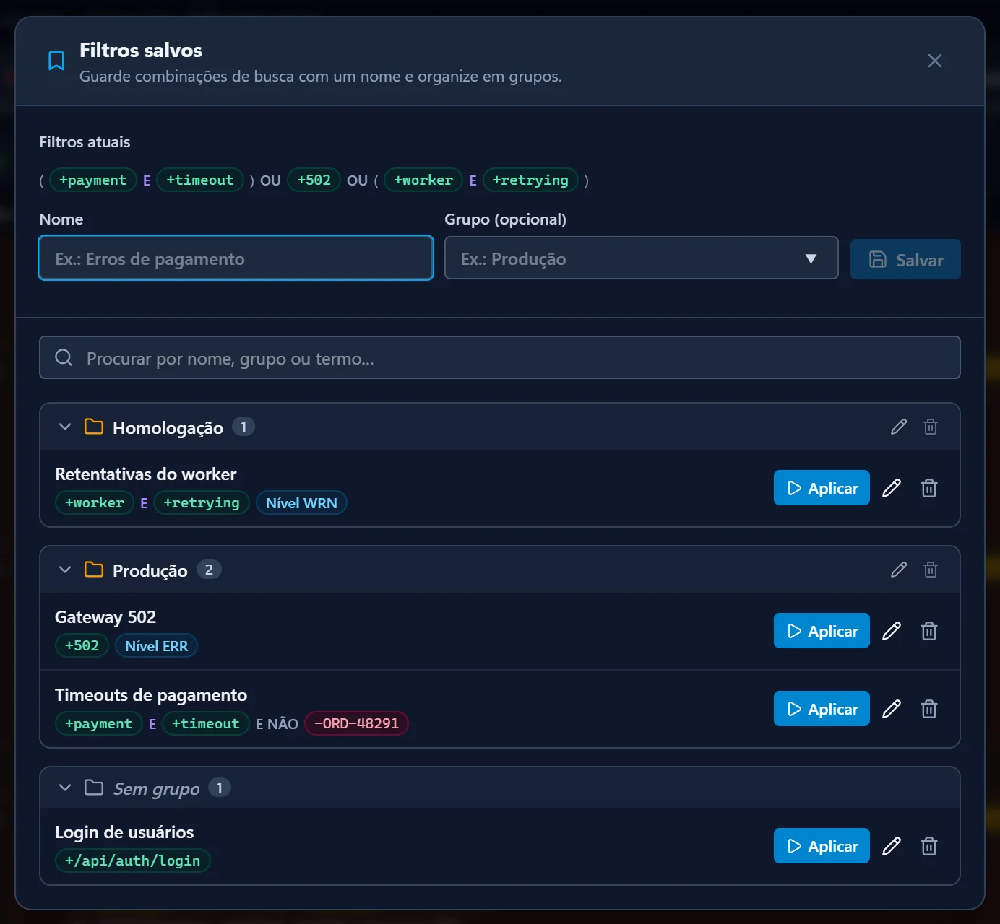
Salvar os filtros atuais
- Monte a busca: termos, conectores E/OU e, se quiser, um nível.
- Clique em Filtros salvos na barra de ferramentas.
- Em Filtros atuais aparece o resumo do que será salvo. Dê um Nome e, se quiser, um Grupo: o campo sugere os grupos que já existem.
- Clique em Salvar. Se já existir um filtro com o mesmo nome no mesmo grupo, o botão vira Substituir e o filtro antigo é atualizado.
Usar e organizar
- Aplicar: substitui os filtros da aba atual pelos do filtro salvo.
- Lápis no filtro: renomeia ou move para outro grupo.
- Lápis no grupo: renomeia o grupo inteiro. Lixeira no grupo: exclui o grupo e todos os filtros dele.
- Clique no nome do grupo para recolher ou expandir.
- Procurar encontra filtros por nome, grupo ou termo.
Os filtros salvos ficam guardados no seu computador e continuam lá depois de fechar o aplicativo. O número ao lado de Filtros salvos mostra quantos você tem.
14Marcadores coloridos
Marcadores destacam com uma cor as linhas que contêm um texto, sem esconder as demais. São úteis para enxergar padrões no meio de muito log.
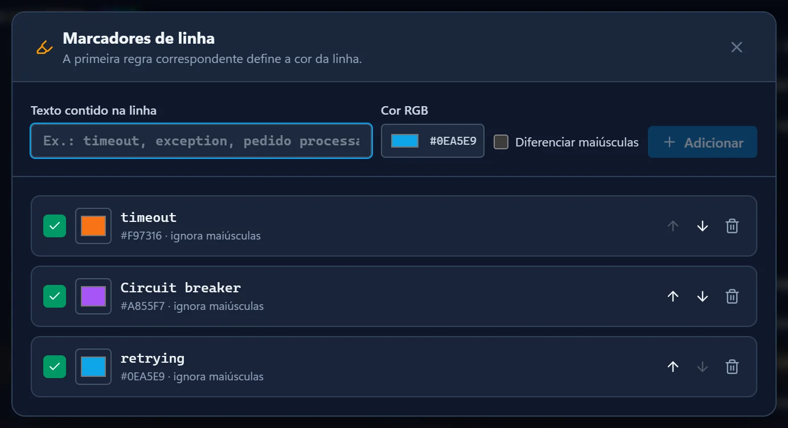
- Clique em Marcadores na barra de ferramentas.
- Digite o texto contido na linha, escolha a cor e, se precisar, marque Diferenciar maiúsculas.
- Clique em Adicionar.
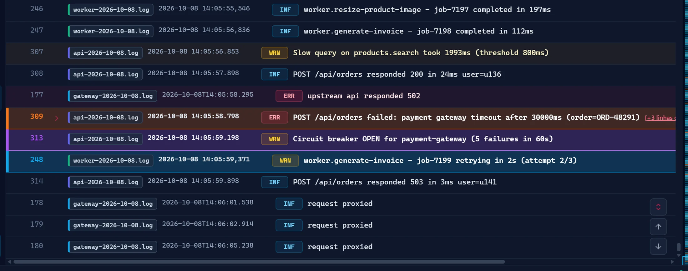
- Caixa verde: ativa ou desativa a regra sem apagá-la.
- Quadrado de cor: troca a cor.
- Setas: mudam a prioridade. Se uma linha combinar com mais de uma regra, vale a primeira da lista.
- Os marcadores ativos aparecem como chips ao lado dos filtros, e o botão Marcadores mostra quantos estão ativos.
15Quebra de linha
Mensagens longas ficam cortadas na largura da tela. O botão Quebrar linhas (ou Ctrl + Shift + W) mostra o texto completo em várias linhas.
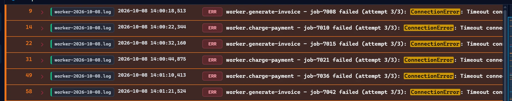
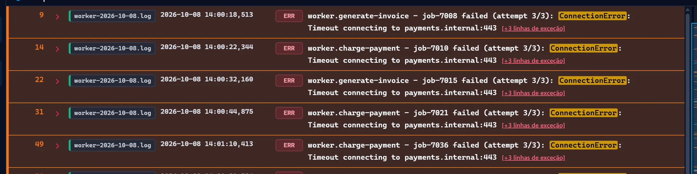
16Tempo real, recarregar e copiar
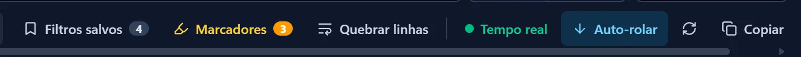
| Botão | O que faz |
|---|---|
| Tempo real | Com a bolinha verde piscando, o OctoSearch confere os arquivos selecionados a cada 1,5 segundo e recarrega sozinho quando eles mudam no disco. Ideal para acompanhar um serviço rodando. |
| Auto-rolar | Aparece com o tempo real ligado. Ativo, a tela acompanha a última linha conforme o log cresce; pausado, mantém sua posição para você ler com calma. |
| Recarregar (setas circulares) | Lê os arquivos selecionados de novo, na hora. |
| Copiar | Copia para a área de transferência todos os registros que estão visíveis, já com busca e filtros aplicados. Ótimo para colar num chamado ou num e-mail. |
17Barra de status
- Arquivos selecionados e o tamanho total deles.
- Linhas: total de linhas lidas nos arquivos.
- Registros: total de registros reconhecidos (um registro pode ter várias linhas).
- Exibidos: quantos registros passam pelos filtros atuais (fica em destaque quando há filtro).
- À direita: estado do Tempo real, do Auto-rolar e Pronto ou a mensagem de erro, se algo falhar.
18Configurações e tema
Abra pela engrenagem no canto superior direito ou com Ctrl + ,.
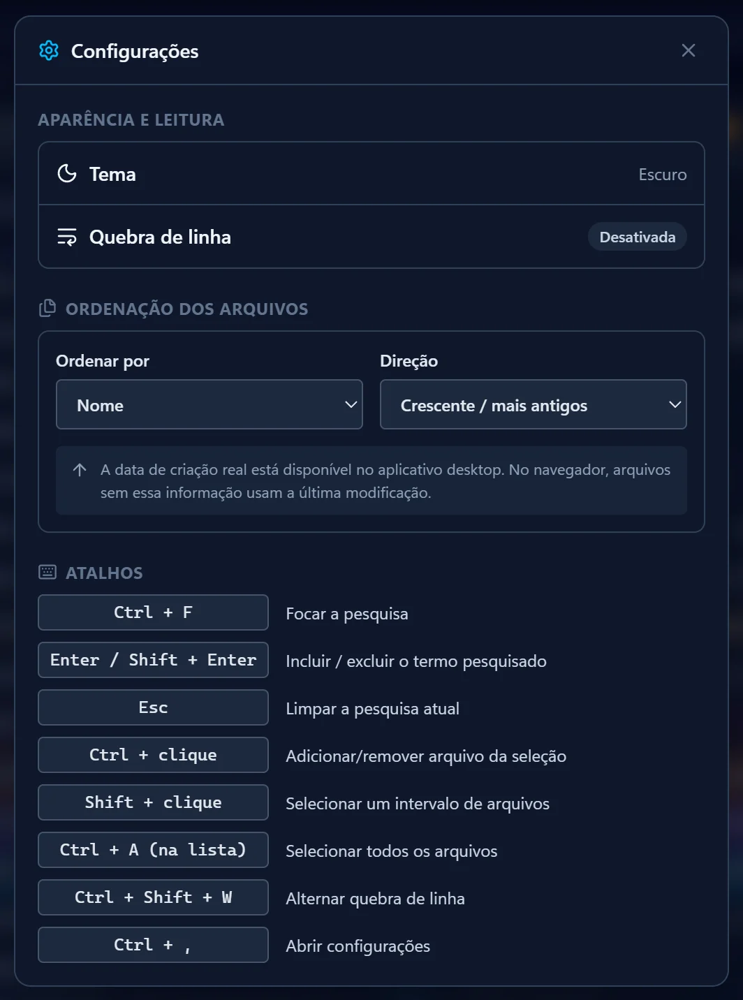
- Tema e Quebra de linha: mostram o estado atual.
- Ordenar por: nome, data de criação ou última modificação dos arquivos.
- Direção: crescente (mais antigos primeiro) ou decrescente (mais recentes primeiro).
Modo claro e escuro
O ícone de sol/lua ao lado da engrenagem alterna entre o tema escuro e o claro. A escolha fica salva.
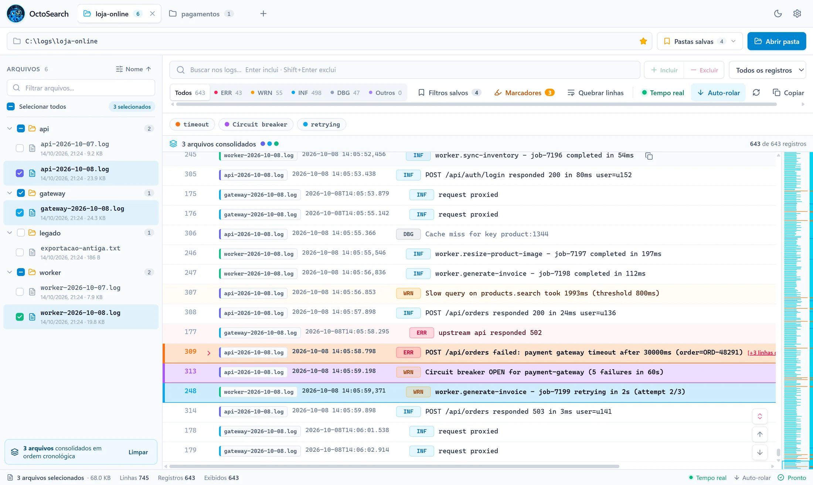
19Atalhos de teclado
| Atalho | Ação |
|---|---|
| Ctrl + F | Ir para a caixa de busca |
| Enter | Incluir o termo digitado |
| Shift + Enter | Excluir o termo digitado |
| Esc | Limpar o texto da busca ou fechar uma janela |
| Ctrl + clique | Adicionar ou remover arquivo da seleção |
| Shift + clique | Selecionar um intervalo de arquivos |
| Ctrl + A (na lista de arquivos) | Selecionar todos os arquivos |
| Ctrl + Shift + W | Ligar ou desligar a quebra de linha |
| Ctrl + , | Abrir as configurações |
| F5 ou Ctrl + R | Recarregar a janela (as abas abertas são restauradas) |
| Duplo clique na aba | Alterar o apelido da pasta |
| Botão direito | Menus de aba, arquivo, subpasta e registro |
20Formatos de log suportados
O OctoSearch reconhece automaticamente data, hora e nível nos formatos mais comuns. Linhas recuadas logo depois de um registro (stack traces, tracebacks) são agrupadas com ele.
| Formato | Exemplo |
|---|---|
| Nível entre colchetes | 2026-10-08 14:05:58.798 [ERROR] POST /api/orders failed |
| Serilog | 2026-10-08 10:00:00.123 -03:00 [ERR] mensagem |
| log4net / Python logging | 2026-10-08 14:05:59,371 WARNING worker - mensagem |
NLog (separado por |) | 2026-10-08 10:00:00.1234|ERROR|Logger|mensagem |
| Console do .NET (Microsoft.Extensions.Logging) | fail: Categoria[0] com a mensagem na linha seguinte |
| JSON por linha | {"timestamp":"…","level":"error","message":"…"} |
| Outras datas | 08/10/2026 14:05:58, 2026/10/08 …, só a hora 14:05:58 |
Formato não reconhecido
Se nenhuma linha de um arquivo seguir um formato conhecido, o OctoSearch avisa e mostra o arquivo linha a linha, sem data e nível. A busca, os marcadores e a cópia continuam funcionando normalmente.
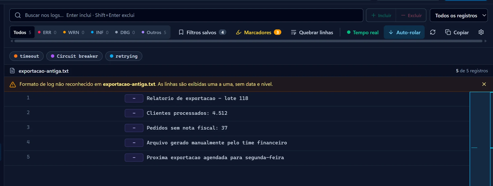
21Dúvidas e solução de problemas
O Windows bloqueou a instalação
Clique em Mais informações → Executar assim mesmo. O aviso do SmartScreen aparece porque o instalador não tem assinatura digital; ele não indica vírus.
Abri uma pasta e nenhum arquivo apareceu
Só são listados arquivos .log, .txt e rotacionados (.log.1, .txt.2…). Confira a extensão dos seus logs e se você tem permissão de leitura na pasta.
Faltam arquivos em pastas muito grandes
Para não travar em pastas enormes ou de rede, o OctoSearch lista até 5.000 arquivos e desce até 12 níveis de subpastas. Abra uma subpasta mais específica.
A busca não encontra um texto que eu sei que existe
- Confira se não há um nível (ex.: só ERR) ou um limite de registros ativo: eles aparecem como chips.
- Veja se os conectores estão em E quando você queria OU.
- Confira se o arquivo certo está selecionado na lista de arquivos.
O log está sendo escrito e não atualiza
Ligue o Tempo real (bolinha verde) ou clique em Recarregar.
A tela pula para o final sozinha
É o Auto-rolar, que acompanha as linhas novas. Clique nele para pausar.
Onde ficam minhas pastas, filtros e marcadores?
No seu próprio computador, no perfil do Windows. Eles são mantidos nas atualizações do aplicativo e não são enviados para nenhum servidor.
Como recebo versões novas?
Na versão instalada, automaticamente (veja Instalação e atualização). Na versão portátil, baixe de novo pelo site.